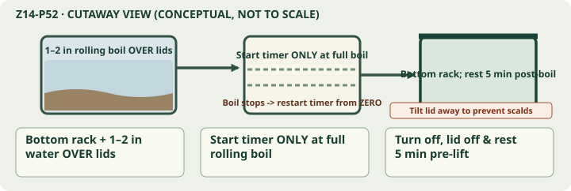

Z14-P52 · Food production and preservation · New manuscript
Operate a boiling-water canner with a full boil and the required water cover over the jars
Deliver uniform 212°F (altitude-adjusted) thermal processing to tested high-acid jars without boil-overs or under-processing.
When it applies · Tested high-acid foods (fruits, jams, tested pickles, properly acidified tomatoes) processed in a deep lidded water-bath pot with rack.
Equipment · Deep boiling-water canner with bottom rack (jars never touch bare pot bottom), jar lifter, lid, and kitchen timer.

Actions
- Place jars upright on a bottom rack inside the canner (preventing direct-flame glass cracking) and keep at least 1 inch of boiling water over the jar tops, or at least 2 inches when the process time at your altitude is over 30 minutes, throughout processing.[P38, P08]
- Cover the canner with its lid, bring water to a FULL VIGOROUS ROLLING BOIL, and start the altitude-adjusted processing timer ONLY AFTER the vigorous boil begins—keeping the boil steady continuously without dipping to a gentle simmer.[P08, F07]
- When processing finishes, turn off heat, remove the lid tilting away from your face to avoid steam scalds, wait 5 minutes before lifting jars straight upright onto a dry towel/rack so pressure equalizes gently and prevents siphoning.[P08, P09]
Failure recognition · Starting the 15-minute jam timer the moment jars enter warm water instead of waiting for a full rolling boil over 1–2 inches of water cover.[P08]
Verify · Confirm bottom rack in place, water at least 1 inch over the jar tops (2 inches for processes over 30 minutes), timer started ONLY at full rolling boil, and 5-minute post-boil rest observed.[P38, P08]
Stop or change course · If the rolling boil stops or water drops below jar tops mid-cycle, add boiling water, restore a full boil, and RESTART the entire processing timer from ZERO.[P08, P06]
Evidence and editorial notes
- F07 · NCHFP · Ensuring Safe Canned Foods (online reference)
- Section: Ensuring safe canned foods > Altitude effects · Conditions: Tested recipe at the actual processing elevation
Support: Adjust processing according to the recipe and altitude tables. A change of ingredient or jar size needs a tested recipe that covers it.
Limitations: Dial-gauge pressure canners require periodic accuracy testing. · Conflicting evidence: None; retained for Z14 reconstruction.
Editorial note: Maintains five-pack integrity. · Specialist reviewer: Food preservation and public health
Primary source · checked 2026-11-24 - P06 · USDA / NCHFP · USDA Complete Guide to Home Canning (2015 / current NCHFP edition)
- Section: Complete Guide to Home Canning > Principle of Tested Protocols · Conditions: All residential home canning (boiling-water and pressure canning)
Support: Treat every USDA/NCHFP tested canning recipe as a single indivisible system: food pH, piece size, liquid viscosity, jar size, headspace, processing method, pressure/temperature, time, and altitude adjustment must all match the tested protocol.
Limitations: Adding extra starch, flour, oil, fats, or altering acid/low-acid ratios slows heat penetration and can cause lethal botulism. · Conflicting evidence: Directly prohibits online untested shortcuts and heirloom recipe alterations.
Editorial note: Foundational system-integrity rule across all Z14 canning cards. · Specialist reviewer: Food preservation process authority and Extension
Primary source · checked 2026-11-24 - P08 · NCHFP · Using Boiling Water Canners (current web edition)
- Section: Using Boiling Water Canners · Conditions: Tested high-acid or acidified recipe with a validated water-bath process
Support: Use the tested recipe’s equipment and full time including altitude adjustment. Keep required water cover and a continuous boil.
Limitations: Atmospheric steam has a separate validated scope; tomato acidification is P22. · Conflicting evidence: See A02 claim audit for boundaries.
Editorial note: Separates high-acid vs low-acid canning gates cleanly. · Specialist reviewer: Food preservation and Extension specialist
Primary source · checked 2026-11-24 - P09 · NCHFP · Using Pressure Canners (current web edition)
- Section: Headspace, Jar Preparation, Two-Piece Lids, and Cooling Seals · Conditions: Mason-type canning jars with two-piece metal lids and screw bands
Support: Use true canning jars (never commercial mayonnaise jars), leave exact recipe headspace, remove trapped air bubbles, wipe jar rims clean, tighten bands fingertip-tight only, and let jars cool undisturbed 12–24 hours before checking vacuum seals and removing rings for storage.
Limitations: Inverting jars, tightening bands after cooling, or re-using flat sealing lids causes seal failure and silent spoilage. · Conflicting evidence: None; directly targets top home-canning mechanical failures.
Editorial note: Grounds jar-seal mechanics and inspection cards in Z14. · Specialist reviewer: Food preservation specialist
Primary source · checked 2026-11-24 - P38 · USDA / NCHFP · Complete Guide to Home Canning, Guide 1: Principles of Home Canning (revised 2015) (revised July 2015)
- Section: Guide 1 page 1-18, Using boiling-water canners, steps 4-9 · Conditions: Processing jars in a boiling-water canner
Support: Keep the water at least 1 inch above the jar tops; for process times over 30 minutes keep it at least 2 inches above. Start timing at a vigorous boil, keep it boiling, restart timing from the beginning if the boil stops, add boiling water to keep the jars covered, then turn off the heat, remove the lid and wait 5 minutes before removing jars.
Limitations: The tested recipe gives the process time at the canner altitude; that time decides which depth applies. · Conflicting evidence: None.
Editorial note: Added in W2C-B07 for RT01-C03. · Specialist reviewer: University Extension food preservation specialist
Primary source · checked 2026-11-25
Source lineage · NCHFP Using Boiling Water Canners; new manuscript · Classification · New manuscript.